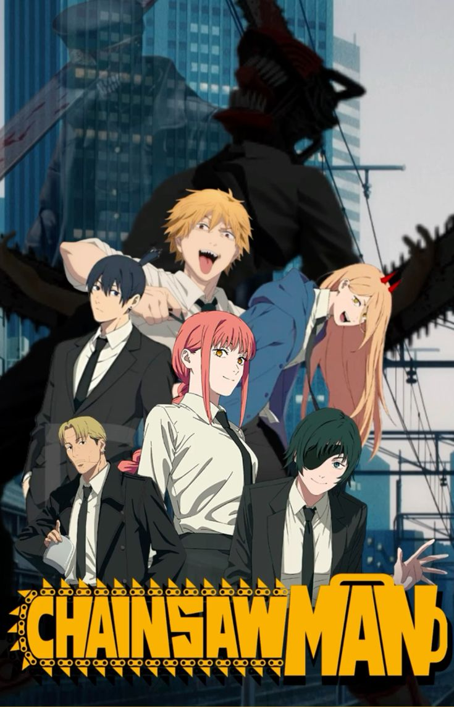

| AnimeSA | Home Top Anime Genres About |
Denji, a poor young man, merges with his chainsaw devil dog Pochita and becomes Chainsaw Man to hunt devils and survive in a dangerous world.

Denji lives in poverty while working as a devil hunter to pay off his father's debt. His only friend is Pochita, a small chainsaw devil.
After betrayal and death, Denji merges with Pochita and becomes Chainsaw Man, joining a government group that hunts dangerous devils.
Contains graphic violence, horror elements, and mature themes.
Chainsaw Man became one of the most talked-about modern anime, known for: